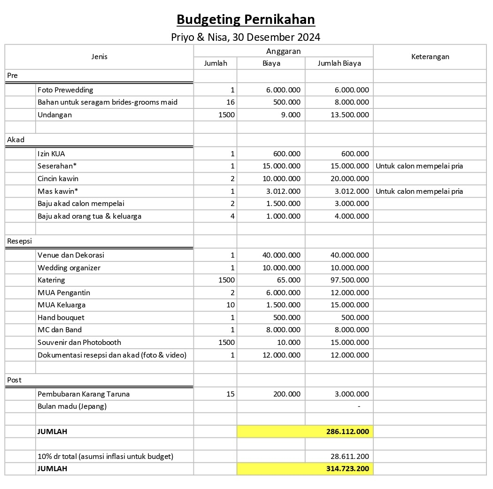

Saya, Priyo Ari Pamungkas adalah calon mempelai pria yang berdomisili di Kota Kediri. Saya lulusan D3 STAN dan S1 Ekonomi Universitas Indonesia, saat ini bekerja pada Kementerian Keuangan di Kota Surabaya. Orang tua saya adalah seorang pejabat tinggi setingkat eselon II pada pemerintah kota kediri. Calon mempelai Wanita adalah Norma Khoirun Nisa, seorang dokter lulusan FK Universitas Brawijaya dan saat ini internship pada sebuah rumah sakit di Kota Kediri. Keluarga calon mempelai wanita adalah seorang pengusaha.
Kami telah menjalin hubungan selama 2 tahun dan berencana akan melangsungkan pernikahan pada 22 September 2024 atau 6 bulan mendatang. Rencana kami akan mengundang sebanyak 900 undangan dan diantaranya terdapat tamu dengan klasifikasi tamu undangan VIP (wali kota dan pejabat lainnya), tamu undangan keluarga besar, tamu undangan kerabat dekat, tamu undangan rekan kantor/kerja kedua mempelai, tamu undangan teman kuliah kedua mempelai, tamu undangan tetangga kedua keluarga, tamu undangan lainnya.
Kami mengusung tema pernikahan adat jawa yang elegan dan beradat. Seluruh ornament dalam acara pernikahan dibalut dengan tema jawa. Penikahan dilaksanakan pada sebuah pendopo yang terletak di Kota Kediri dan disekitarnya dikelilingi oleh taman yang hijau dan asri. Kami menyediakan sekitar 15 stall makanan dan minuman yang kebanyakan adalah makanan tradisional yang saat ini sudah sulit untuk ditemui.
Kami dan keluarga menyadari bahwa Pesta Pernikahan adalah suatu hal yang kompleks, sekali dalam seumur hidup, namun harus tetap sesuai kepantasan, kepatutan dan kemampuan. Pesta Pernikahan ini juga kami maksudkan sebagai sarana untuk saling mengenal dan silaturahmi antara dua keluarga besar kami, saling menyapa kembali saudara dan kerabat-kerabat kami.
Pesta pernikahan sejatinya adalah jamuan makan untuk tamu, kami telah menyiapkan supaya "ruh acara" menjadi sajian yang menarik
1. Hidangan Makanan :
Ayam Wijen, Ikan Tepung, Sapi Lada Hitam, Mie Bihun, Capcay
2. Stall Makanan Tradisional
a. Gudeg
b. Pecel dan Tumpang Kediri
c. Rawon Surabaya
d. Soto ayam Branggahan
e. Selat Solo
f. lontong dan tahu gejrot
3. Stall Minuman
a. Es dawet ayu
b. Es Kacang Hijau
c. Wedang ronde dan angsle
d. Es Buah dan Air Putih
4. Makanan penunjang
a. Siomay
b. Aneka potongan buah
Kami telah merencanakan pernikahan ini, maka kami telah menyiapkan segala pembiayaan.
Saya termasuk pemuda yang aktif pada organisasi kemasyaratan di lingkungan, untuk itu kami mengundang para Pemuda Karang Taruna untuk turut membantu melancarkan Pesta Pernikahan kami. Para pemuda kami berikan tugas seperti membantu proses lalu lintas, parkir kendaraan, membantu petugas katering, hingga membantu proses pemasangan dan pelepasan dekorasi.
Hal seperti ini juga biasa saya lakukan apabila ada hajatan lain di lingkungan kami.